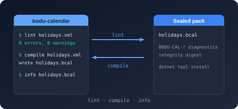

Bodu.Globalization.Calendar tooling

The calendar toolchain is two Preview packages that sit before the runtime loads a document: Bodu.Globalization.Calendar.Tool, the bodu-calendar command-line tool that lints notable-date XML / JSON documents with the stable BODU-CAL-* diagnostics and compiles them to sealed .bcal binary rule packs, and Bodu.Globalization.Calendar.Build, the MSBuild integration that runs that compiler incrementally on every build. Both belong to the Globalization & Calendars topic and share one code path — the Build task is a thin ToolTask over bodu-calendar compile, so a document that passes on the command line passes in the build and vice versa.
A compiled pack loads through NotableDateResourceLoader.LoadBinary(Stream) without re-parsing or re-validating; the binary rule packs guide explains when a pack is worth it and what the format guarantees.
bodu-calendar — the command-line tool
Install
This tool is not published to nuget.org — pack it from a clone and install it from that feed:
# Not on nuget.org: pack the tool from a clone and install it from that local feed.
dotnet pack Bodu.Globalization.Calendar.Tool/src -c Release -o ./artifacts
dotnet tool install --global --add-source ./artifacts Bodu.Globalization.Calendar.Tool
Targets net8.0 and net10.0, and depends on Bodu.Globalization.Calendar.
Status: Preview (see the package matrix).
Verbs and options
bodu-calendar lint <file.xml|file.json> [--resolver-dir <dir>]
bodu-calendar compile <file.xml|file.json> [-o <out.bcal>] [--resolver-dir <dir>]
bodu-calendar info <file.bcal>
| Verb | Does |
|---|---|
lint |
Loads the document in collect mode and prints every diagnostic (errors, warnings, and informational) without compiling. |
compile |
Validates the same way, then writes the sealed .bcal pack — but refuses to write anything from a document that fails validation. Prints the resource id, pack path, size, and payload SHA-256 digest on success. |
info |
Reads a compiled pack back and prints its format version, resource id, schema version, notable-date and adjustment-policy counts, and payload digest. |
| Option | Applies to | Meaning |
|---|---|---|
-o <file>, --output <file> |
compile |
The pack path to write. Defaults to the input path with a .bcal extension; the directory is created if missing. |
--resolver-dir <dir> |
lint, compile |
A directory whose <name>.xml / <name>.json files satisfy the document's <Import resource="<name>"> declarations. Consulted before the bundled common catalogues (CommonNotableDateResources), so a local hub can shadow a shared one. |
-h, --help, help |
— | Prints usage to standard error. |
The document format is selected by extension: .xml goes through the XML loader, .json through the JSON loader; any other extension is a usage error.
Exit codes and output
| Code | Constant | Meaning |
|---|---|---|
0 |
CalendarTool.ExitSuccess |
The verb succeeded — the document is valid, the pack was written, or the pack was read. |
1 |
CalendarTool.ExitFailure |
A validation or input failure: the document has error diagnostics, the input file does not exist, or (for info) the pack is malformed. |
2 |
CalendarTool.ExitUsage |
A usage error: no verb, an unknown verb or option, a missing argument, or an unsupported extension. Usage help is printed. |
Diagnostics print one per line as [Severity] CODE: message — the NotableDateValidationDiagnostic ToString() form — so build logs, editors, and CI annotations can match on the stable code:
$ bodu-calendar lint holidays.xml
[Error] BODU-CAL-SCHEMA: The notable-date document XML failed schema validation: The element 'Rules' in namespace 'urn:bodu:globalization:calendar' has incomplete content. List of possible elements expected: 'Rule' in namespace 'urn:bodu:globalization:calendar'.
[Error] BODU-CAL-ADJREF: Rule 'fixed' references undefined adjustment policy 'weekend-roll'.
holidays.xml: FAILED — 2 error(s), 2 total diagnostic(s).
$ bodu-calendar lint contoso-holidays.xml
contoso-holidays.xml: OK — resource 'contoso-holidays' is valid (0 diagnostic(s)).
$ bodu-calendar compile contoso-holidays.xml -o packs/holidays.bcal
Compiled 'contoso-holidays' -> packs/holidays.bcal (275 bytes, sha256 85504d61441ee72109a3325c0859c7a7a40f2139ef5afc9cc23d012ba3b5a63d).
$ bodu-calendar info packs/holidays.bcal
packs/holidays.bcal: format v1, resource 'contoso-holidays' (schema 1.0), 2 notable date(s), 1 adjustment policy(ies), payload sha256 85504d61441ee72109a3325c0859c7a7a40f2139ef5afc9cc23d012ba3b5a63d.
lint writes diagnostics to standard output; compile writes them to standard error when it fails. A missing input file is reported (exit 1) before the extension is examined, so an existing file with an extension other than .xml / .json is what produces the usage error. The full code table, with the condition behind each code, is in Calendar validation diagnostics. The tool's entry point is also callable in process — CalendarTool.Run(args, output, error) — which is how the Build task and the test suite drive it; see the namespace overview.
Bodu.Globalization.Calendar.Build — the MSBuild integration

Install
This package is not published to nuget.org. To use it from a clone, reference the project directly:
<ProjectReference Include="../Bodu.Globalization.Calendar.Build/src/Bodu.Globalization.Calendar.Build.csproj"
ReferenceOutputAssembly="false" OutputItemType="Analyzer" />
A development dependency: the package ships the task assembly under tasks/, the .targets under build/, and the framework-dependent bodu-calendar binaries under tools/. It adds no runtime reference to the consuming project — reference Bodu.Globalization.Calendar yourself to load the packs it produces.
Status: Preview.
NotableDatePack items
Declare each document to compile as a NotableDatePack item; ResolverDir metadata plays the role of --resolver-dir:
<ItemGroup>
<NotableDatePack Include="rules\holidays.xml" />
<NotableDatePack Include="rules\corporate.json" ResolverDir="rules\shared" />
</ItemGroup>
Each item compiles to $(NotableDatePackOutputPath)<Filename>.bcal and is added to the project output directory (as <Filename>.bcal beside the application), ready for NotableDateResourceLoader.LoadBinary. An invalid document fails the build, with the tool's BODU-CAL-* diagnostic lines surfaced in the build log at high importance so they are visible even at minimal verbosity.
Incremental behavior
The CompileNotableDatePacks target declares each item as an Inputs / Outputs pair, so MSBuild skips every document whose .bcal is newer than its source — an unchanged document is never recompiled. The pack format is byte-stable (the same resource always encodes to the same bytes), which keeps downstream up-to-date checks sound. The target runs before AssignTargetPaths so the compiled packs can join the normal copy-to-output step.
Properties and overrides
| Property | Default | Purpose |
|---|---|---|
NotableDatePackOutputPath |
$(IntermediateOutputPath)bcal\ |
The directory receiving compiled packs. |
NotableDatePackCopyToOutput |
true |
Set false to keep packs out of the project output directory. |
BoduCalendarTaskAssembly |
the package's tasks/netstandard2.0/Bodu.Globalization.Calendar.Build.dll |
Advanced: repoint the task assembly (used by the repository's own integration tests). |
BoduCalendarToolDll |
the package's tools/Bodu.Globalization.Calendar.Tool.dll |
Advanced: repoint the bodu-calendar tool assembly the task executes. |
The CompileNotableDatePack task
The .targets file wires the items to the Bodu.Globalization.Calendar.Build.CompileNotableDatePack task, one invocation per item. Its parameters mirror the tool's compile verb:
| Parameter | Required | Maps to |
|---|---|---|
Input |
yes | The .xml / .json document — the item's Identity. |
Output |
yes | The pack path — $(NotableDatePackOutputPath)%(Filename).bcal. Its directory is created before the tool runs. |
ToolDll |
yes | The tool assembly, executed through the dotnet host (dotnet exec --roll-forward Major, so any newer installed runtime works) — $(BoduCalendarToolDll). |
ResolverDir |
no | The item's ResolverDir metadata → --resolver-dir. |
You would normally never call the task directly; declare NotableDatePack items and let the targets drive it. If you do need to, the dotnet host must be on the PATH.
Where to go next
- Binary rule packs — when to use a pack, producing and loading packs from code (
SaveBinary/LoadBinary), the format guarantees and layout, and the command-line and build sections this page expands on. - Calendar validation diagnostics — every
BODU-CAL-*code the tool can print, its severity, and the condition behind it. - Bodu.Globalization.Calendar.Builder — authoring the documents the tool compiles, including
SaveBinaryfor compiling from code. - Authoring notable date rules — the XML / JSON schema the tool validates.
- Bodu.Globalization.Calendar.Tool API reference —
CalendarTool.Runand the exit-code constants.